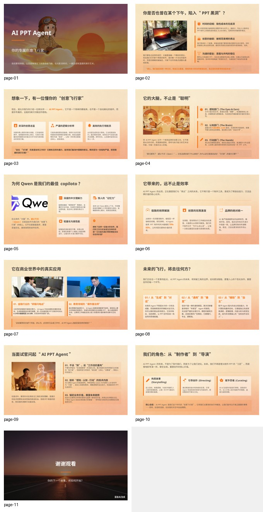
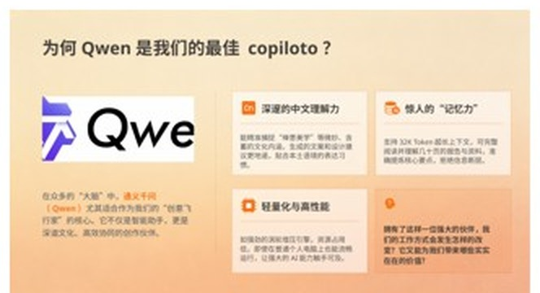
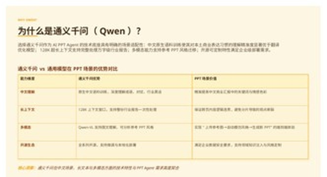
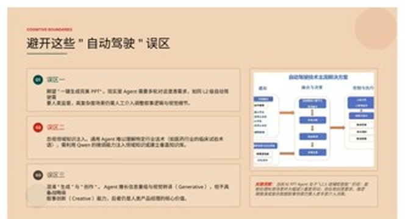
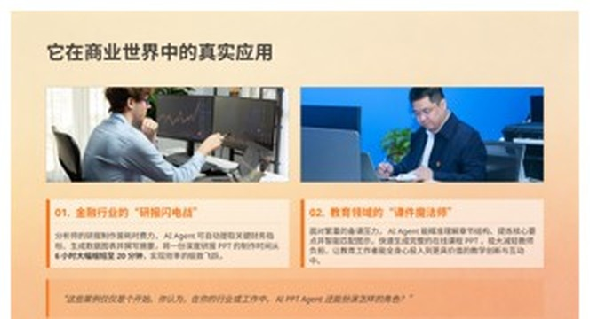
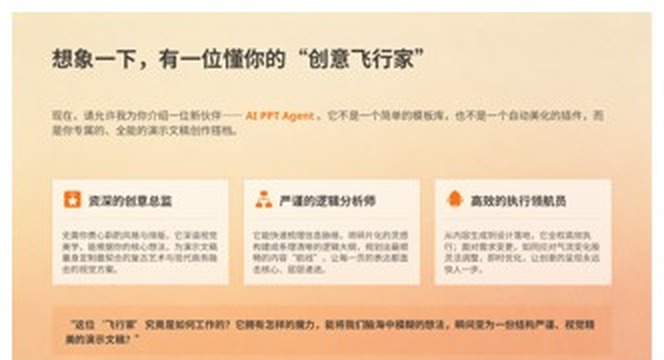

AI 工具生态 · 竞品评测 · 千问业务思考 · 个人优势
姓名 / 日期技术如何重写产品形态——演进过程与竞品格局。
WPS AI · Copilot · Canva
资产：存量用户与格式心智
软肋：AI 是补丁非原生
Gamma · AiPPT
资产：场景打磨深
软肋：模型靠采购，易被降维
Qwen · Kimi · 豆包
资产：模型红利 + 流量入口
软肋：场景纵深不足
Manus · GenSpark
资产：链路最完整
软肋：成本高、稳定性差
一次 Agent 链路的拆解实验——链路评测 + 结果评测。
Qwen / 豆包 / Kimi 等主流 AI PPT Agent。
同一指令，含明确硬约束与抽象风格要求。
链路评测（看思考过程）+ 结果评测（看交付质量）。
"落日飞车风格"
一个抽象到无法直接执行的风格词。
用户要求
1–10 页
豆包实际交付
11 页

⤢ 放大它识别出 PPT 的真实用途是"帮用户提升面试认知"，而非"介绍一个概念"。
智能管家（解释 Agent）· 建筑师 vs 砌砖工（解释内容规划）· 自动驾驶级别（解释能力边界）。
大纲 → 配图 → 渲染，步骤写死
快、稳，但不会变通，违反约束也不自知。
边想边做、回头检查
灵活，但慢、贵、偶尔不稳定。
内容规划 / 设计系统 / 质检分工
上限最高，工程复杂度也最高。
在"硬伤"之上，再用三层标准逐项打分：

⤢问题：标题拼写错误 copiloto · logo 截断成 Qwe · 写"Qwen 支持 32K Token"——已过时且错误（主流为 128K~1M）。

⤢千问写 128K 上下文与多模态 Qwen-VL，与现状一致——事实层更可信。

⤢千问主动声明能力边界：误区一/二/三 + "L2.5 级辅助智能"——有 Refusal / 不确定性表达。

⤢豆包通篇只夸不拒；引用 25,500 美元/年、70-95%、6 小时→20 分钟等数字均无来源，伪造引用风险更高。

⤢内容层：豆包"飞行家 / 魔力 / 飞行"等比喻重复多，论证密度不足；千问观点讲解更清晰。
设计层：千问信息过载、字号排版不合理、可读性差；豆包视觉层级 / 留白更合理，并用 icon 填充空白增可读性。
评测框架同源——链路能力（理解 / 检索 / 推理）+ 交付质量（准确 / 结构 / 可用）。同一套方法论，可平移到文档阅读、研报、问答等场景。
检索召回 · 多文档冲突识别 · 拒答质量
事实一致性 · 引用可溯源 · 结构化交付
各家实测 case 与截图
优势与落地——四张牌，每一张都能兑换成产品力。
文本+文生图+语音+视频全自有
配图不依赖图库版权
Agent 时代排版 = 代码生成
代码强 = 排版上限高
全球开发者基础
二次开发反哺工具生态
钉钉 / 夸克 / 阿里云 / 电商
独立公司没有的入口
| 入口 | 场景 | 关键优势 |
|---|---|---|
| 夸克 | 学生答辩、求职作品集 | 高频刚需，适合拉新 |
| 钉钉 | 周报、述职、项目汇报 | 文档上下文现成，"读完周报直接出汇报" |
| 阿里云 API | 企业内训、销售方案批量定制 | B 端规模化 |
| 电商商家工具 | 详情页、直播间素材 | 批量、快、合规 |
Content Remix——工具的消失。
AI 工具的终局不是更多垂直工具，而是工具的消失——它会成为 AI 回答的"渲染层"。
有需求 → 想起某个工具 → 打开它
（用户自己做"需求到工具"的匹配）
AI 识别意图带展示/汇报/传播属性 → 自动选择最佳形态
PPT / 网页 / 播客 / 信息图
从工具到出口：不是更漂亮，而是可信、可交付、可复用；不是更多孤立工具，而是一个理解意图的渲染层。
感谢观看 · Q&A